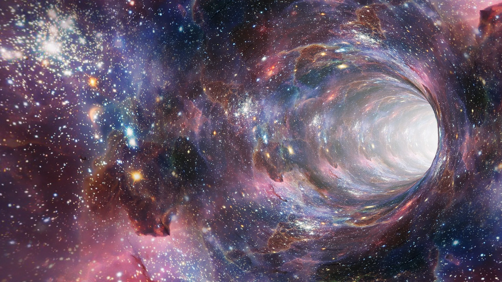

BLACK HOLES
Los agujeros negros son objetos astronómicos extremadamente densos y con un campo gravitatorio tan fuerte que nada, ni siquiera la luz, puede escapar de su interior. Están formados por la muerte de estrellas masivas que colapsan bajo su propia gravedad. Los agujeros negros tienen una variedad de tamaños, desde aquellos con masa estelar hasta los que tienen masa de millones o incluso billones de veces la masa del Sol. Una vez que algo cae dentro de un agujero negro, no hay forma de recuperarlo. Esto es porque el agujero negro se expande cada vez más y el material que cae en su interior se acelera hasta el punto de que su velocidad se acerca a la velocidad de la luz. Esta velocidad es tan grande que el material caído nunca podrá escapar.
Sin una fuerza que frene la gravedad, el emergente agujero negro encoje hasta un volumen cero, en cuyo punto pasa a ser infinitamente denso. Incluso la luz de dicha estrella es incapaz de escapar a su inmensa fuerza gravitatoria, que se ve atrapada en órbita, por lo que la oscura estrella se conoce con el nombre de agujero negro. Los agujeros negros atraen la materia, e incluso la energía, hacia sí, pero no en mayor medida que otras estrellas u objetos cósmicos de masa similar. Esto significa que un agujero negro con la misma masa que la de nuestro sol, no «aspiraría» más objetos hacia sí que nuestro sol con su propia fuerza gravitatoria.
Pequeños pero poderosos Los agujeros negros tienen un tamaño pequeño. Un agujero de una masa solar de un millón, como el que se sospecha que se encuentra en el centro de algunas galaxias, tendría un radio de unos tres millones de kilómetros, es decir, sólo unas cuatro veces el tamaño de nuestro sol. Un agujero negro con una masa igual a la del sol tendría un radio de tres kilómetros.

Los planetas, la luz y otra materia deben pasar cerca de un agujero negro para ser atraídos dentro de su radio de acción. Cuando alcanzan un punto sin retorno, se dice que han entrado en el horizonte de sucesos, un punto del que es imposible escapar porque requiere moverse a una velocidad superior a la de la luz.
Las primeras imágenes de agujeros negros de la historia salieron a la luz en 2019. Con un telescopio del tamaño del planeta Tierra, más de 200 científicos lograron capturar la sombra de un agujero negro, que quedó retratado por primera vez en la historia.